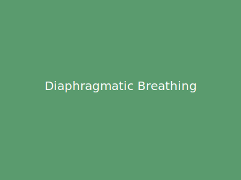

التنفس الحجابي

التنفس الحجابي، أو التنفس البطني، يفعّل الحجاب الحاجز لتنفس أعمق وأكثر كفاءة. على عكس التنفس الصدري السطحي، هذه الطريقة تزيد استيعاب الأكسجين وتعزز الاسترخاء.
التعليمات:
- استلقِ على ظهرك وركبتاك منحنيتان، أو اجلس مريحاً.
- ضع يداً على صدرك والأخرى على بطنك.
- اشهق ببطء من الأنف واترك البطن يرتفع، والصدر ثابتاً.
- ازفر ببطء بشفاه مزمومة، اشعر بانخفاض البطن.
- كرر من 5 إلى 10 دقائق.
نصائح:
- تمرّن على معدة فارغة لراحة أكبر.
- ابدأ بـ 5 دقائق وزِد تدريجياً.
- تأكد أن البطن يتحرك أكثر من الصدر.
تحذيرات:
- إن شعرت بدوخة، أبطئ أو توقف.
- استشر طبيباً إن كان لديك مشاكل تنفسية.
العودة للتمارين